只修复第01款v2的视口预算、关键HUD布局与暂停可达性。玩法、关卡、难度、输入规则和素材保留。下方是原尺寸实际浏览器截图，无裁切或生成画面；点击查看原图。
修复前从准确提交8334686a隔离加载原文件；修复后为同一关卡的短时输入验证。截图用于比较布局，不声称逐帧相同战局。全部键鼠/触控操作由Playwright自动化完成，未进行真人游玩、实体手机或双人协作验收。
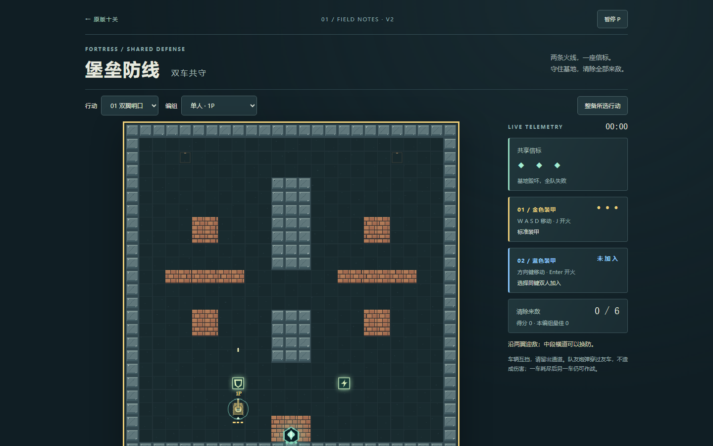
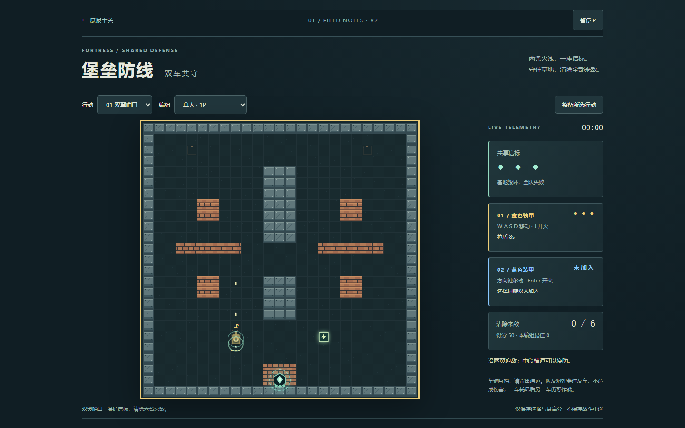
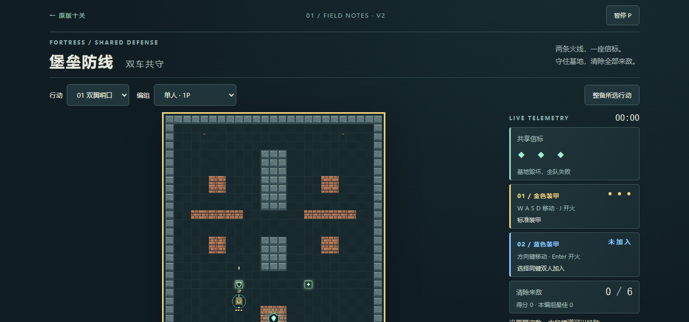
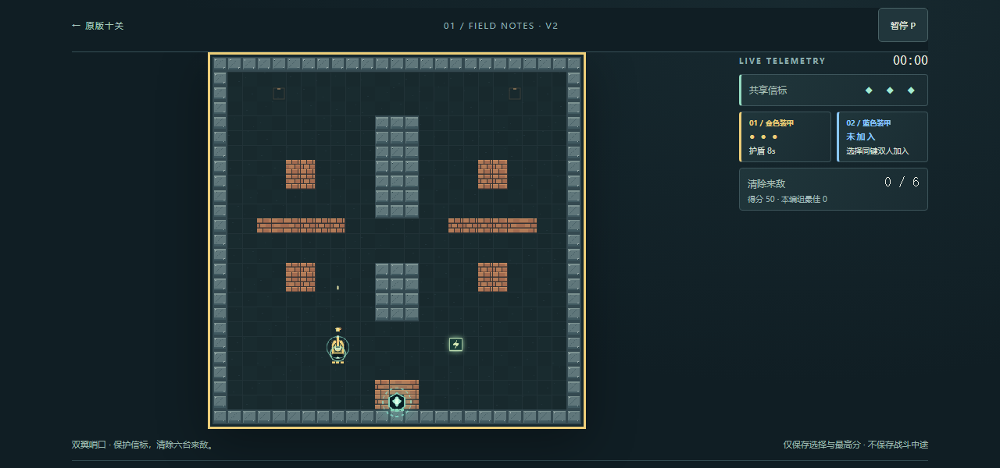
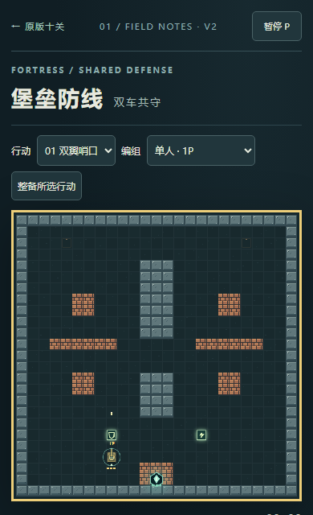
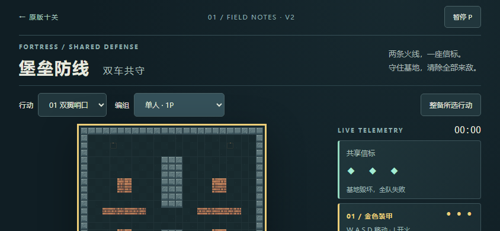
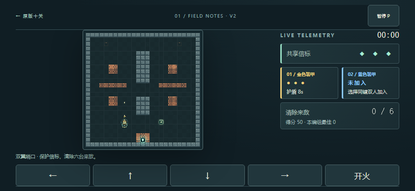
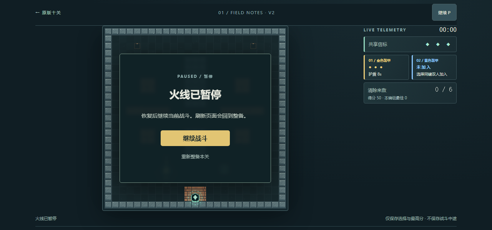
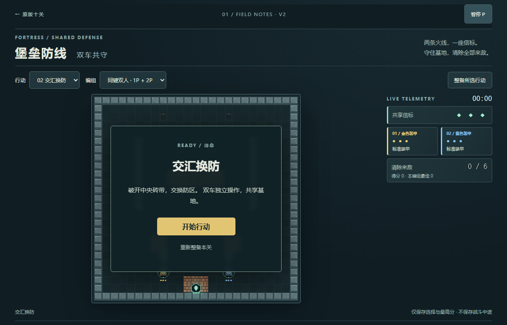
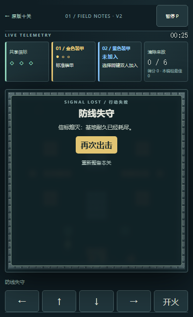
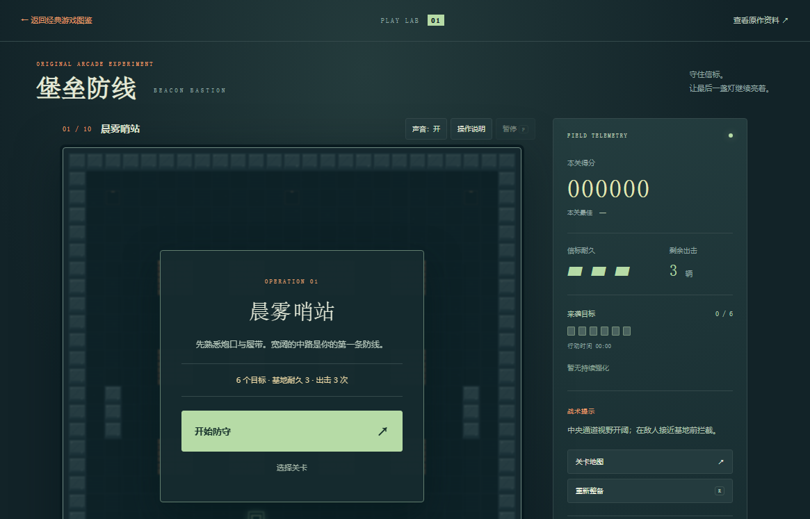
7种视口检查完整方形战场、基地/双车/清敌/计时HUD、可见且未遮挡的暂停按钮；实际点击暂停/继续不依赖P。暂停快照冻结、重试、刷新回整备、双车输入及旧版入口通过。没有新增完整通关或真人合作结论；既有版本不保存战斗中途，本轮仍然如此。未测试实体手机、Safari、键盘鬼键、全部游戏机制或审美品质。
原始基线 · 本地回归 · 自然失败重试 · 核心与旧版保留核对
公开站7视口操作记录 · 60文件实际HTTP哈希 · 准确功能SHA与Pages结果
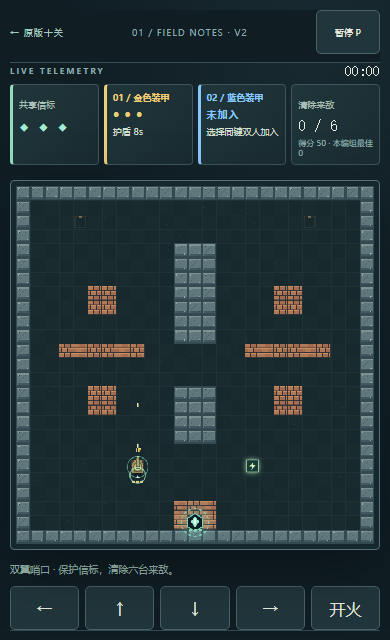